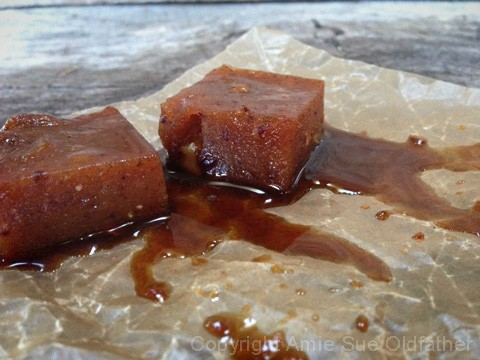
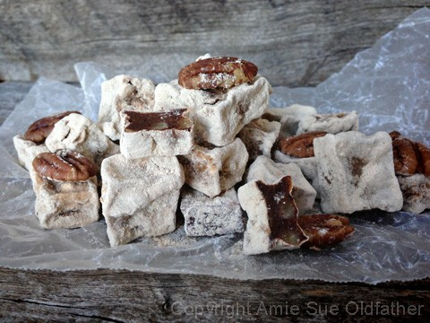

Peach and Pecan Turkish Delights

~ raw, vegan, gluten-free ~
I love inspiration… it comes in so many different forms. This particular recipe was inspired by agar. I have made several batches of vegan cheese for Bob this week and one of the ingredients I use in it is agar.
So, it got me thinking, “What else can I do with it?” Agar mystifies me but then so many things do…. :) Anyway, I always enjoy making the vegan cheeses because it takes a matter of minutes for something in a liquid state to turn to a jello-like, firm structure.
It’s like a school science project that can captivate the mind of a 7-year-old or in this case a 42-year-old. Sorry, I am getting off track, I was transported… 42 minus 7 equals…. holy-mother-of-maca-smoothies! That was 35 years ago. I feel old when I can say, “35 years ago, I……..”
Turkish delight is a confection based on a gel of starch and sugar. There are many varieties but in short, you will find nuts inside that are suspended in a gel. It is eaten in small cubes that have been dusted with icing sugar or powdered cream of Tartar to prevent clinging.
So this is where all this talk about agar comes into play. To create this gel-like texture, I used agar. This so not a raw product but it does come with pretty good health benefits and it is something I occasionally consume so I feel just fine having it in my pantry. A person might be able to use Irish moss or kelp paste in place of it, but I haven’t tried (yet)… so I can’t say for sure.
I hope that you don’t mind me sharing my experience with you. I just want you to know what to expect when using agar. When the agar is in its powder or flake form, it is “boring” meaning, it just sits there. But once you heat it up in a liquid (I use water), it turns “boring” into exciting. After the agar dissolves in hot liquid and starts to cool, it starts to gel.
Now, if you are in the middle of this recipe, you got the agar in boiling water, it has dissolved and you are about to pour it into your blender with the other ingredients and… the phone rings, your spouse just hollers for you, your daughter or son is yelling from the bathroom that “WE ARE OUT OF TOILET PAPER!!!!”…. and suddenly you realize that your agar started to gel up. No worries! Take a deep breath, answer the phone, see what your spouse wants, throw a roll of paper towels in front of the bathroom door, return the pan to the stovetop, and heat it again. It will soften right back up. Shew! I don’t know about you, but that tuckered me out!
You could use just about any fruit in this recipe but I used peaches. This was the last of my peach harvest pickings and it is always a sad moment when I know I have to wait another year to drown in o-my-gosh-what-am-I-going-to-do-with-all-these-peach moments. When it comes to making the peach puree, it will depend on the size of your peaches how many it will take to create 2 cups of puree. I used 6 peaches. If you end up with more than 2 cups of puree, just keep the excess in a jar and throw it in your next morning smoothie.

After you go through the process of making the Turkish Delights, you have two options. Chill overnight, cut them into bite-sized pieces… and eat. Or pop them in the dehydrator which will give you a completely different texture. Better yet, chill one-half and dehydrate the other half and see which way you prefer.
I will say this… you will have great fun just de-panning the darn things. I could have said, “removing them from the pan” but de-panning is the word for the night. :) I used an 8×8 baking pan that has a removable bottom. I lifted the mass of gel out of the pan and pulled the bottom disc off and there in my hand was a sheet of jiggling magic. It was sort of slimy but it wasn’t wet with liquid. It felt like it should break apart but it didn’t. It was like you wanted to turn it over and just spank it. lol
I want to apologize for being so darn chatty throughout this recipe but I am not going to… I am just excited and I want it to become contagious. After cutting them into small squares I decided to coat them with something. They were great as is, and that is an option. Bob suggested that I use raw coconut crystals.
So I tried that, the granules added a nice crunch factor to it but it wasn’t visually what I was after. So, I ground the crystals to a fine powder. More in line with what I was aiming for but after coating a few and they sat there, the raw sugar started to turn into a liquid and left a caramelly puddle of sweetness around them. Scrumptious… beautiful …. but not the easiest to eat. I decided on lucuma. Perfect! And that my friends, is a good note to end on. Perfect! :)
Yields 8×8 pan
- 2 cups peach puree
- 1/4 cup date paste
- 2 Tbsp maple syrup
- 1/4 cup dried cranberries
- 1/2 cup crushed raw pecan, hand mix
- 1 Tbsp agar powder
- 1 cup water
Coating:
Preparation:
- Wash the peaches and remove the pits. Chop into large pieces and place in the blender.
- Add the date paste and maple syrup. Blend until the peaches turn into a puree.
- Add dried cranberries and blend just until they start to break down.
- Having small bits of cranberries is attractive in this treat.
- Prepare the 8×8 pan. Line with plastic for the ease of removal once the delights have set up. Set aside.
- In a small-sized saucepan bring 1 cup of water to a boil.
- Start whisking the water as you slowly add the agar. This will avoid clumps from forming. Whisk until the agar is dissolved. This can take 3-5 minutes.
- The agar mixture will start to “bubble” a little and this is normal. Whisk until you don’t see any white specs of agar.
- Turn the blender on and get a vortex going in the mixture.
- Slowly pour the agar mixture into the vortex.
- Please be careful that you don’t splatter yourself with the hot liquid. I haven’t experienced this but just be cautious.
- If you have a Vitamix with a tamper, you can use that to keep the mix going with the lid on.
- Blend for only 10-20 seconds, add the cranberries and pecans. Blend just long enough to get the agar mixed in and to just break down the cranberries and pecans.
- Pour the mixture right into the pan immediately. It will start to set up quickly.
- As you pour the mixture into the pan, use a spatula to help spread it, you don’t have much time to do this.
- Please the pan in the fridge overnight to set.
- Remove the pan and lift the delights out onto a cutting board. Cut into small squares and coat with lucuma powder.
Dehydration Option:
- These treats can be enjoyed either way. I prefer them dehydrated. The texture changes remarkably. They become a bit shriveled looking as you can see in the photo below and they are a bit chewier. Drying them some, will extend their shelf life a few more days.
- Dehydrate on the mesh sheet that comes with the dehydrator at 145 degrees (F) for 1 hour, then reduce to 115 degrees for 8 -10 hours.
Culinary Explanations:
- Why do I start the dehydrator at 145 degrees (F)? Click (here) to learn the reason behind this.
- When working with fresh ingredients it is important to taste test as you build a recipe. Learn why (here).
- Don’t own a dehydrator? Learn how to use your oven (here). I do however truly believe that it is a worthwhile investment. Click (here) to learn what I use.

© AmieSue.com